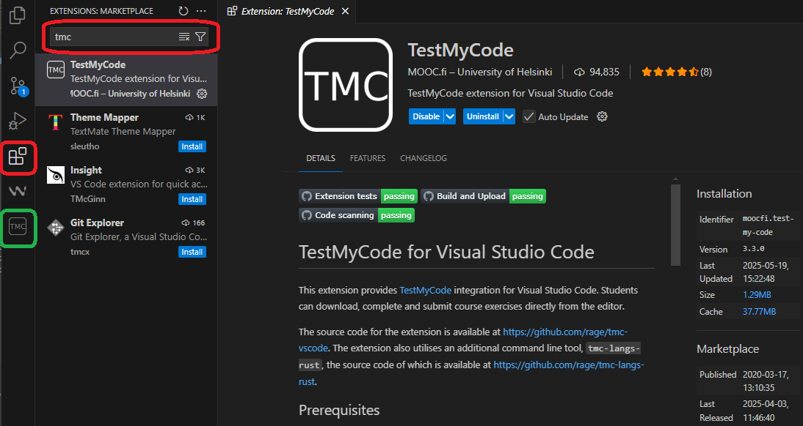

Python MOOC
Ympäristön käyttöönotto
- Käynnistä VSCode ja siirry Extensions-välilehdelle
- Etsi TestMyCode-lisäosa ja asenna se itsellesi.

- Avaa Yritysportaali ja etsi Python 3.13.0, asenna se koneellesi.
- Asenna vielä VSCoden lisäosa Python kohdasta Extensions.
Kurssille liittyminen ja työskentely
- Tee itsellesi ensimmäiseksi TMC-tunnus kohdasta Sign Up osoitteessa https://tmc.mooc.fi/org/tredu/courses/1562.